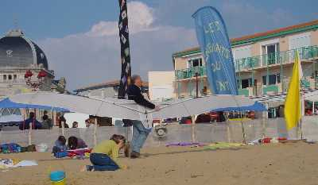
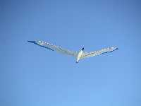
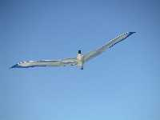
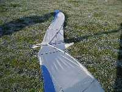
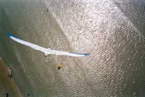

| Accueil | Albatros | Spiralier et Messager | Megoel | Indoor | Condor | Albatros2 | Demoiselle | P |


Quand je l'ai mis en vol pour la première fois, je l'ai trouvé beau (forcément) mais j'ai été un peu déçu : il paraît plus petit en vol qu'au sol. Les tests que je fais régulièrement auprès du public donnent des estimations variant entre 2 et 4 m, et pourtant il en fait 6. J'excepte la charmante demoiselle qui m'a dit "12 mètres"... Il s'agit sans doute d'un problème de taille relative du corps et de l'aile. J'ai essayé (en dessin) un corps plus gros, mais ça ne me plaît guère, alors je persiste et assume. Curieusement, quand il est très haut (200 m de fil) on ressent mieux qu'entre 10 m et 100 m qu'il est de taille importante.
Le dièdre est assez faible et il vole mieux comme ça. Evidemment, par vent fort, le dièdre augmente mais les ailes se mettent à plat grâce à un dispositif non-breveté. Du coup, j'ai volé jusqu'à force 7 (et peut-être plus, j'ai pas mesuré là-haut) sans dégats. Comme toujours, c'est au contact de la planète que l'on casse le plus souvent : avec peu de fil, les oscillations ne s'amortissent pas voire s'amplifient, et la chute sur la pointe d'aile est mortelle.
Sinon, dès 20 m d'altitude, le vol est bien stable. Il est même encore plus stable par vent fort où il est carrément rivé sur place. Evidemment, dans les turbulences, il suit le mouvement, mais la longueur de l'aile lui donne une inertie majestueuse.
|
 |
| Détail de Structure |

AU REVOIR...